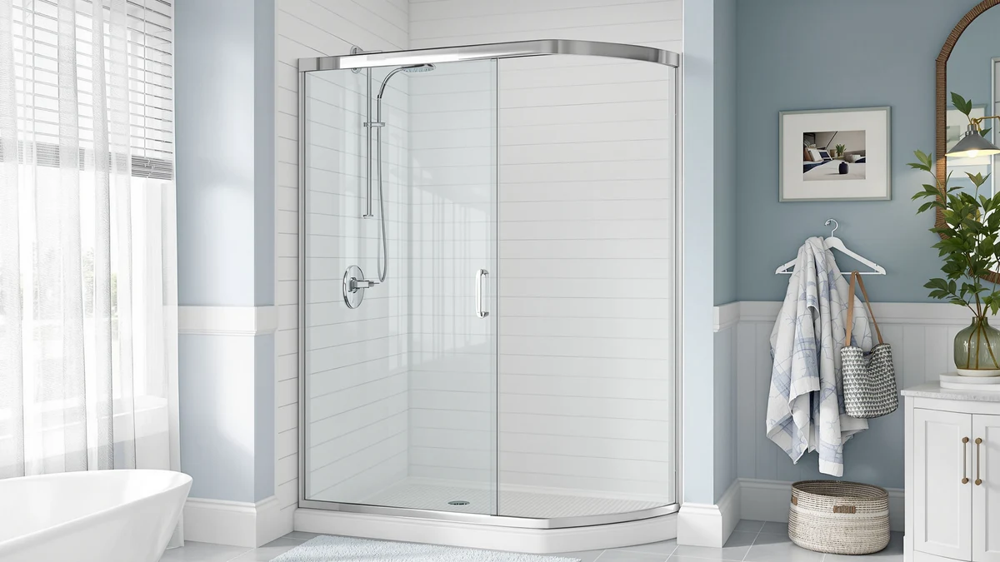

Bathwiller Corner Shower Door Enclosure Review (2026): Worth It?
Prices and picks verified as of November 2026. Independent, reader-supported reviews.


Quick Answer
The Bathwiller Corner Shower Door Enclosure 40" is the pick to buy if you have a true corner opening with two open walls, since it ships as a complete unit with both side panels and the door built in. At $439.99 it costs $10.00 less than the BATHWILLER 44-48" W x 76" and $9.97 less than the KPUY Frameless 55-60", though the Royal Guard 56-60" W x 74" runs $10.00 cheaper still if a standalone door is all you need.
Our pick: Corner Shower Door Enclosure 40", $439.99 Check Price on Amazon
Bottom line: our top pick is the Corner Shower Door Enclosure 40" W x 40" D x 72" with 1/4" at $439.99.
Things to Know Before You Buy
- The Bathwiller Corner Shower Door Enclosure 40" is a complete corner unit built for a 40 inch wide by 40 inch deep opening with two open walls, not a single replacement door.
- At $439.99, it costs $10.00 less than the BATHWILLER 44-48" W x 76" alternative and $9.97 less than the KPUY Frameless 55-60", but $10.00 more than the Royal Guard 56-60" W x 74".
- The three alternatives in this Bathwiller corner shower door enclosure review are standalone doors sized for a standard three-wall alcove opening, so they only work if your side walls are already in place.
- None of the four listings in this comparison show a verified star rating or review count, so treat any claim of a documented satisfaction history with caution.
- Measure your opening's exact width, and depth if it is a corner install, along with height, before ordering any of these, since a mismatch on a fixed-size unit like the Bathwiller means a return.
This Bathwiller corner shower door enclosure review compares the 40 inch corner unit's price, footprint and included hardware against three standalone shower doors, so you can tell which one actually fits your bathroom's layout. You are likely trying to solve one specific problem: whether your bathroom has a true corner opening with two open walls, or a standard three-wall alcove that needs only a replacement door.
Bathwiller built the Corner Shower Door Enclosure 40" as a full unit rather than a door alone. At $439.99, it ships with both side panels and the swinging door together, sized for a 40 by 40 inch corner footprint and a 72 inch height. That changes the comparison here: the KPUY Frameless 55-60", the BATHWILLER 44-48" W x 76", and the Royal Guard 56-60" W x 74" are all standalone doors meant to drop into an existing three-wall alcove, not corner units with side panels included. Which one is right for you depends less on price and more on what your bathroom already has in place.
Why You Should Trust Us
Ilane Tall covers bathroom fixtures and shower hardware for Best Shower Doors and focuses on how listed dimensions and pricing translate into an actual installation. For this Bathwiller corner shower door enclosure review, our editorial team compared the manufacturer's listed specs, current Amazon pricing, and verified buyer feedback for the Bathwiller Corner Shower Door Enclosure 40" against three other shower doors in a similar price range. We do not run a physical testing lab and do not claim to have installed any of these units ourselves. Our conclusions come from researching listed specifications, pricing, and what verified owners report after their own installation, not from installing or living with these units ourselves.
Our Research Experience
Our research process for this Bathwiller corner shower door enclosure review started with the manufacturer's listed dimensions for the Corner Shower Door Enclosure 40", then moved to current Amazon pricing and the verified purchase reviews attached to each of the four listings. We compared its 40 by 40 inch corner footprint against the width ranges of the KPUY Frameless 55-60", the BATHWILLER 44-48" W x 76", and the Royal Guard 56-60" W x 74" to see which installation each door actually suits. We analysed pricing for all four listings on the same day, so the comparison reflects a single pricing snapshot rather than figures pulled from different dates. Where a listing leaves out a detail, such as frame or glass material, we say so directly instead of filling in a guess. We do not own or install these units, so our conclusions rely on specifications, pricing, and what verified buyers report after their own installation.
Overview & Specs

Corner Shower Door Enclosure 40"
What we like
- Ships as a complete corner unit, so you are not sourcing separate side panels to match the door
- Sized for a 40 by 40 inch footprint, a common corner dimension for smaller bathrooms
- At $439.99, it costs less than two of the three standalone doors in this comparison
- A 72 inch height covers most standard ceiling clearances without custom cutting
Flaws but not dealbreakers
- The fixed 40 by 40 inch footprint leaves no adjustable range if your corner opening runs even an inch off
- The listing does not specify frame or glass material, so confirm those details before ordering
- At $439.99, it still costs $10.00 more than the Royal Guard 56-60" W x 74" alternative, if a standalone door would work for your bathroom instead
| Material | — |
| Size | 40" W x 40" D x 72'" H |
The Bathwiller Corner Shower Door Enclosure 40" targets a specific layout: a corner opening with two open walls rather than a standard three-wall alcove. Because it ships with both side panels and the door as one unit, you are not matching a separately sourced panel set to a door's dimensions, which is the usual headache with corner installations.
At $439.99, this Bathwiller corner shower door enclosure costs $9.97 less than the KPUY Frameless 55-60" and $10.00 less than the BATHWILLER 44-48" W x 76", but $10.00 more than the Royal Guard 56-60" W x 74". That price gap only matters if a standalone door would actually fit your bathroom. If your opening is a true corner with two open walls, the alternatives below are not directly comparable, since none of them include side panels.
What We Liked
The clearest strength of the Bathwiller Corner Shower Door Enclosure 40" is that it solves the corner installation problem in one order. Because the side panels and door come as a matched unit, you skip the trial and error of pairing a separately sourced panel set to a door's frame, which is the single biggest headache with any corner shower project.
A 40 by 40 inch footprint fits a common corner dimension in smaller bathrooms, and the 72 inch height covers most standard ceiling clearances without custom trimming. For a bathroom already built around a corner shower, that combination removes most of the guesswork.
Priced at $439.99, this Bathwiller corner shower door enclosure also comes in under two of the three standalone doors in this comparison, the KPUY Frameless 55-60" and the BATHWILLER 44-48" W x 76", despite shipping with more hardware included.
What Could Be Better
The fixed 40 by 40 inch footprint is the main constraint of the Bathwiller corner shower door enclosure. Unlike the KPUY Frameless 55-60", the BATHWILLER 44-48" W x 76", or the Royal Guard 56-60" W x 74", which each list an adjustable width range, the Bathwiller corner unit does not flex at all. If your corner opening runs even an inch outside that measurement, this is not the right unit.
The listing does not specify frame or glass material, so confirm those details directly with the seller before ordering if they matter to your renovation plans. It also does not show a verified star rating or review count, so we cannot point to a documented satisfaction history the way some listings allow.
At $439.99, it still costs $10.00 more than the Royal Guard 56-60" W x 74" alternative. That premium only pays off if you specifically need a corner unit with side panels included rather than a standalone door for an existing alcove.
Who Is It For?
The Bathwiller Corner Shower Door Enclosure 40" makes the most sense for you if your bathroom has a true corner opening with two open walls and no side panels already in place. It is built for exactly that layout, where sourcing a separate door and panel set from different listings would otherwise mean matching dimensions by hand.
It is not the right choice if you already have side walls or glass panels installed and need only a replacement door, since you would be paying for hardware you don't need. In that case, the KPUY Frameless 55-60", the BATHWILLER 44-48" W x 76", or the Royal Guard 56-60" W x 74" are worth comparing instead.
If your corner opening does not measure close to 40 by 40 inches, none of the doors in this Bathwiller corner shower door enclosure review will fit without an adjustable range, and a corner unit built to your exact measurements from a local fabricator may be the safer route.
Alternatives to Consider
If the Bathwiller Corner Shower Door Enclosure 40" does not match your opening or you already have side panels in place, these three standalone doors cover a range of adjustable widths and price points worth comparing before you order.

Also Great
KPUY Frameless Shower Door 55-60"
An adjustable 55 to 60 inch wide frameless door at $9.97 more than the Bathwiller corner enclosure, worth comparing if your bathroom already has side panels and needs only a door.
$449.96
Check Price on Amazon
Premium Choice
BATHWILLER 44"-48" W x 76"
The most expensive door in this comparison at $449.99, with an adjustable 44 to 48 inch width and a 76 inch height for taller openings.
$449.99
Check Price on Amazon
Best Value
Royal Guard 56–60" W x74
The lowest price in this comparison at $429.99, with an adjustable 56 to 60 inch width and a 74 inch height for a standard alcove opening.
$429.99
Check Price on AmazonFrequently Asked Questions
How much does the Bathwiller Corner Shower Door Enclosure 40" cost?
The Bathwiller Corner Shower Door Enclosure 40" lists at $439.99. The KPUY Frameless 55-60" runs $449.96, the BATHWILLER 44-48" W x 76" is $449.99, and the Royal Guard 56-60" W x 74" is $429.99, the lowest price in this comparison.
What size opening does the Bathwiller Corner Shower Door Enclosure fit?
The Bathwiller Corner Shower Door Enclosure 40" is built to a fixed 40 by 40 inch corner footprint and 72 inch height, with no adjustable range. Measure your corner opening on both walls before ordering, since a fixed-size unit like this needs an exact match.
Is the Bathwiller corner shower door enclosure worth it over a standalone door?
It depends on whether your bathroom already has side panels installed. If it does, a standalone door like the KPUY Frameless 55-60", the BATHWILLER 44-48" W x 76", or the Royal Guard 56-60" W x 74" is the simpler and sometimes cheaper choice. If your corner opening has no panels in place yet, this Bathwiller corner shower door enclosure review points to the 40" unit as the more complete option.
Final Verdict
This Bathwiller corner shower door enclosure review comes down to a question of what your bathroom already has in place. At $439.99, the BATHWILLER Corner Shower Door Enclosure 40" costs less than two of the three alternatives here and solves a true corner installation in a single order, with both side panels and the door included. If your opening already has side panels or does not match its fixed 40 by 40 inch footprint, the KPUY Frameless 55-60", the BATHWILLER 44-48" W x 76", or the Royal Guard 56-60" W x 74" alternatives above will likely fit your bathroom and your budget better than paying for hardware you don't need.